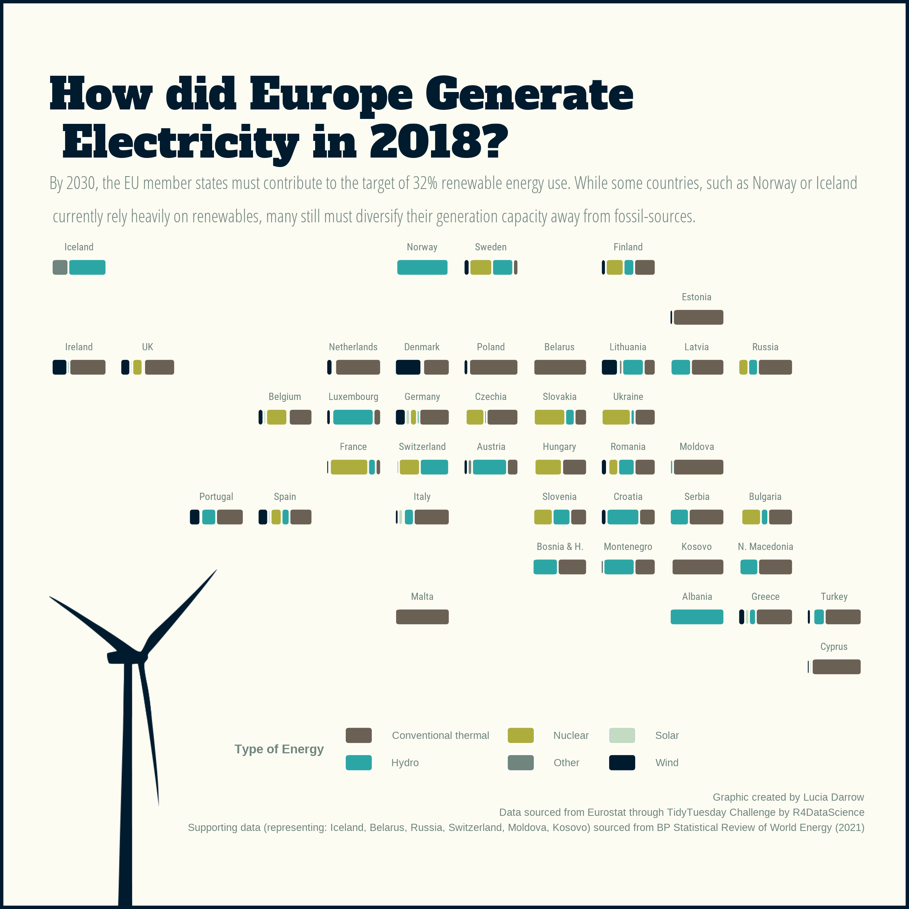

The energy landscape in Europe is rapidly changing. In this post, I used data from a 2020 TidyTuesday challenge to create an engaging visual. The resulting graphic is made using ggplot2, imagemagick and geofacet. 